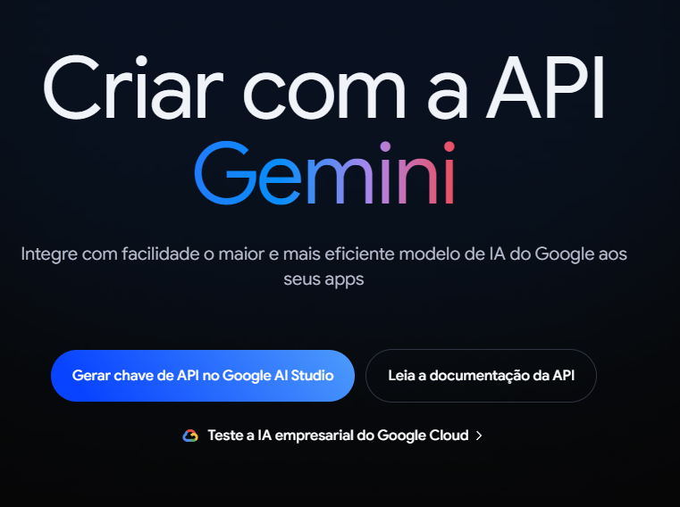
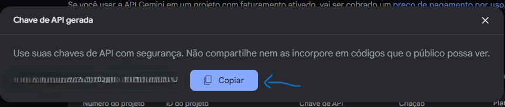
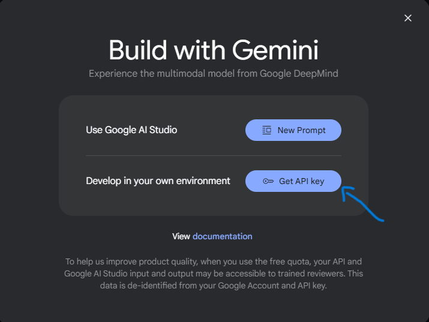
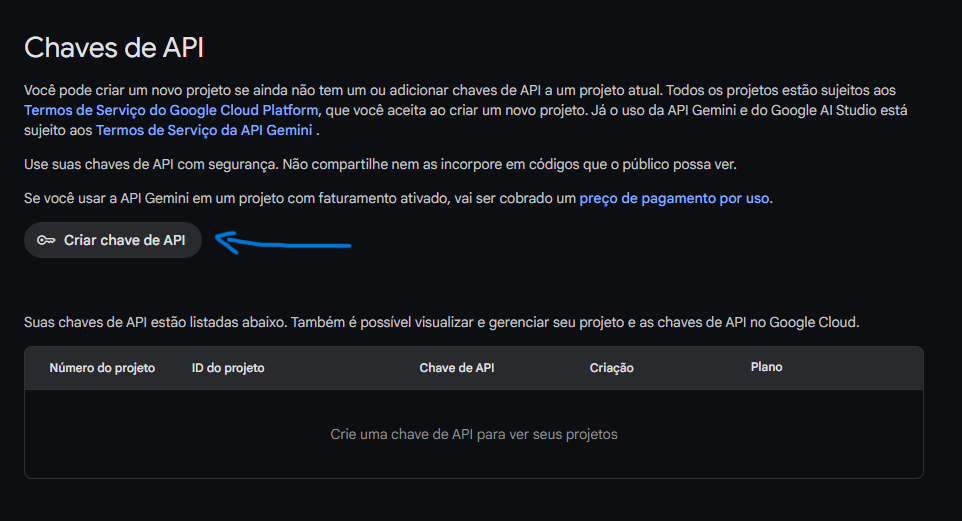
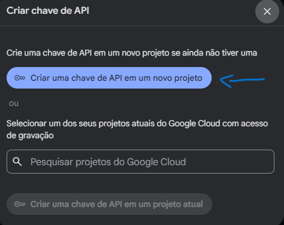
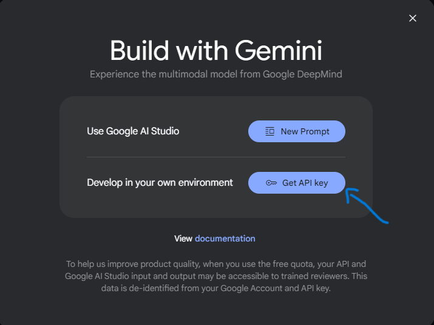
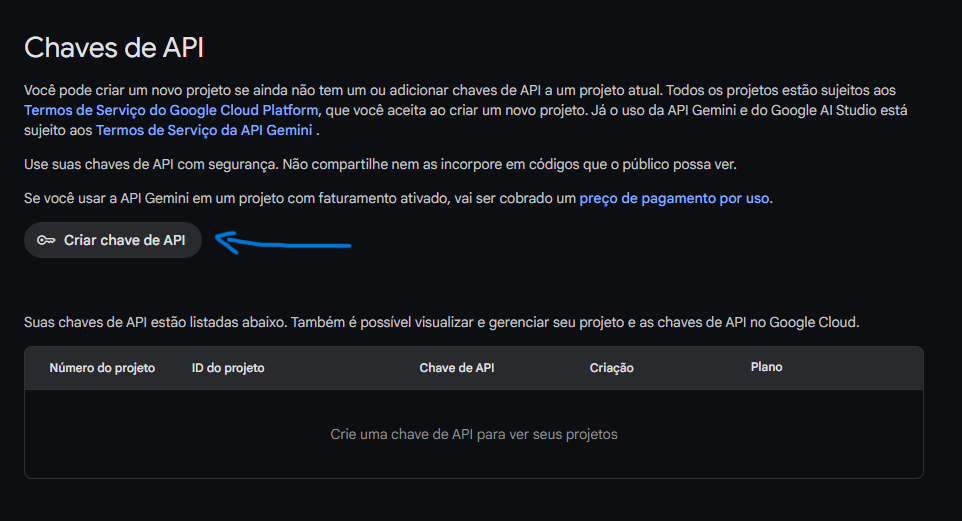
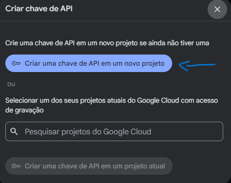
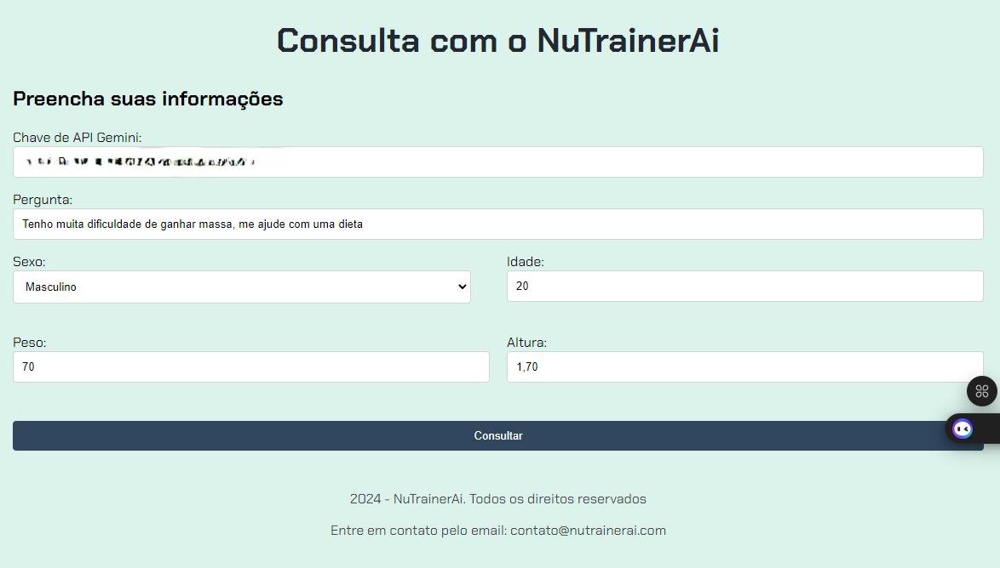

Ajuda
Como obter a API Key do Gemini:
Para utilizar o seu sistema com a inteligência artificial do Gemini, é necessário gerar uma "chave de API". Esta chave possibilita a conexão do sistema com o Gemini.
Passo 1: Criar uma Conta no Gemini
Antes de gerar a chave de API, siga os passos abaixo para acessar o Gemini com sua conta Google:
- Acesse o site oficial do Gemini aqui.
- Faça login usando sua conta Google. 
Passo 2: Gerar a Chave de API do Gemini
Após fazer login, siga os passos abaixo para gerar sua chave de API:
- Acesse a seção de geração de chave de API clicando aqui.
- Clique no botão "Gerar Nova Chave de API".
- Copie a chave gerada e guarde-a em um local seguro. 
 





Passo 3: Usar a Chave de API do Gemini
Com sua chave de API em mãos, você pode utilizá-la para fazer consultas no sistema. Veja abaixo um exemplo de como fazer uma requisição usando a chave:
Considerações Finais
O uso do Gemini API é gratuito, porém é importante tomar cuidado com o uso excessivo. Não me responsabilizo por quaisquer cobranças posteriores que possam ocorrer devido ao uso além dos limites gratuitos.
Certifique-se de manter sua chave de API em segurança, pois ela concede acesso aos seus dados e perfil no Gemini. Para mais detalhes, consulte a documentação oficial do Gemini.